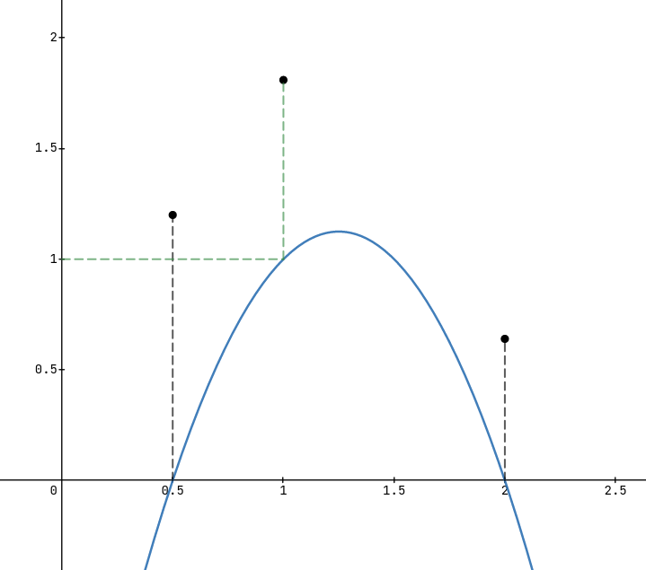

Interpolating between a set of points is often useful, especially in data analysis and statistics. Though the technique we will discover today is not used in these areas much, it is a technique to interpolate between points using the lowest order polynomial, which is useful for small sets of points. The beauty in Lagrange interpolation lies within its simplicity and intuitiveness, which I will try to convey in this post.
The underlying idea for this kind of interpolation is rather simple and intuitive. One starts by constructing a polynomial for every point in our input set of points $$s = \{(x_1, y_1), (x_2, y_2), \dots, (x_n, y_n)\}$$ The way we construct the polynomial for every point $x_i$ in $s$ is by creating a polynomial $l_i$ such that $l_i$ has a value of 0 for all points $x_n$ where $n\neq i$ and a value of $1$ for the point $x_i$. This may sound complicated but all it means is that for each point we construct a polynomial that has zeroes on all other points in our input set and it's value is one at itself. We call this the basis polynomial of the point.
The way we will achieve this is by multiplying all $(x - x_n)$ for which $n\neq i$. This way for any point we choose that is not our target point, the entire multiplication will collapse to 0, as one of the factors becomes 0. We can write this as $$z_i(x) = \prod_{m=0, m\neq i}^k {(x-x_m)}$$ To Scale the value of this polynomial to be $1$ at $x_i$ we need to divide $z_i$ by $z_i(x_i)$ which gives $$l_i(x) = \frac{z_i(x)}{z(x_i)}$$ As both of these terms have the same product we can combine them as a single fraction. In the end we have $$l_i(x) = \prod_{m=0, m\neq i}^k{\left(\frac{x - x_m}{x_i - x_m}\right)}$$ for the basis polynomials